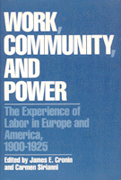

<body bgcolor="#FFFFFF" text="#000000" link="#0000FF" vlink="#CC0000" alink="#CC0000"><center><hr width="350" size="1" align="center" noshade>A major reinterpretation of the international working class in the early 20th century<hr width="350" size="1" align="center" noshade><p><a href="https://cdcshoppingcart.uchicago.edu/Cart/ChicagoBook.aspx?ISBN=9780877223085&&PRESS=temple" target="_top">Buy this book!</a> | <a href="https://cdcshoppingcart.uchicago.edu/Cart/Cart.aspx?PRESS=temple" target="_top">View Cart</a> | <a href="https://cdcshoppingcart.uchicago.edu/Cart/Cart.aspx?PRESS=temple" target="_top">Check Out</a></p><p></p></center><!--none//--><h1>Work, Community, and Power</h1>
<H2>The Experience of Labor in Europe</H2>
<h3>edited by James E. Cronin and Carmen Sirianni</h3>
<P>cloth 0-87722-308-4 $49.50, Apr 83, <FONT COLOR=#990033>Out of Stock Unavailable</FONT>
<br>paper 0-87722-309-2 $14.95, Apr 83, <FONT COLOR=#990033>Out of Print</FONT>
<BR> 306 pp
</P><BLOCKQUOTE><I>"[These essays] examine a crucial but neglected transitional phase in the evolution of capital and labor's response to it."</I>
<br>&#151<b><I>Choice</I></b><I></I></BLOCKQUOTE>
<p>The first quarter of the twentieth century was perhaps the most dramatic and consequential period for the international working class. Corporate control was consolidated and centralized. The workplace began to be extensively reorganized by Taylorist and later Fordist methods. Revolutions, factory occupations, and new forms of workers' control and industrial democracy followed in the wake of World War I. Revolutionary industrial unionism challenged previous organizations, and new communist parties contended with Social Democracy for the political allegiance of the working classes. In this crucible of struggle and social transformation, many of the most influential political and social theories were forged: not only those of Lenin and Kautsky, but also Gramsci and Lukacs, Korsch and Austro-Maxism, Michel and Weber. The meaning of both democracy and socialism has remained contested ever since.
<p>The comparative and case studies in this collection offer a major reinterpretation of this crucial period in working class history in the United States, Europe, and Soviet Russia. They combine recent interests of historians and social scientists in the labor process, social history "from the bottom up," the mobilization of social movements, the world system and international state competition with more traditional concerns about organization, theory and politics.
<BR>&nbsp;<H2>About the Author(s)</H2>
<P><b>James Cronin</b> is Associate Professor of History at the University of Wisconsin-Milwaukee. He is author of <I>Industrial Conflict in Modern Britain</I>. Currently he is completing a work entitled <I>Labour and Society in Twentieth-Century Britain</I>, to be published next year.</P>
<P><b>Carmen Sirianni</b>i is Assistant Professor of Sociology at Northeastern University in Boston. He is the author of <I>Workers' Control and Socialist Democracy: The Soviet Experience</I>. He has also written articles on the democratization of the state and economy, and on critical problems in Marxist theory. Currently he is working on the dynamics of industrial democracy in the twentieth century from a comparative perspective.</P>
<BR><H2>Subject Categories</H2>
<p><A HREF="/tempress/labor.html" TARGET="_top">Labor Studies and Work</a>
</p>
<BR><h2 class="inpageheading">In the series</H2>
<P><I><a href="http://www.temple.edu/tempress/class_culture.html" onMouseOver="window.status='Click for other books in this series!'; return true;" onMouseOut="window.status=''; return true;" target="_top">Class and Culture</a></i></p><p>No longer active.</p>
<p align="center"><a href="https://cdcshoppingcart.uchicago.edu/Cart/ChicagoBook.aspx?ISBN=9780877223085&&PRESS=temple" target="_top">Buy this book!</a> | <a href="https://cdcshoppingcart.uchicago.edu/Cart/Cart.aspx?PRESS=temple" target="_top">View Cart</a> | <a href="https://cdcshoppingcart.uchicago.edu/Cart/Cart.aspx?PRESS=temple" target="_top">Check Out</a></p><p><font face="Arial" size="1"><a href="copyright.html" onMouseOver="window.status='Web Copyright Policy';return true;" onMouseOut="window.status=''" title="Web Copyright Policy">&copy;</a> 2015 <a href="http://www.temple.edu" target="new" onMouseOver="window.status='Link to Temple University home page';return true;" onMouseOut="window.status=''" title="Link to Temple University home page">Temple University</a>. All Rights Reserved. http://www.temple.edu/tempress/titles/279_reg.html</font></p>